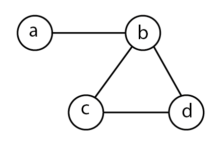

5 Quelques mesures possibles
Ce chapitre pourrait être deux, trois voire dix fois plus long sans trop de problèmes : il existe de nombreuses mesures couramment utilisées en analyse de réseau. J’ai choisi d’en présenter une poignée en insistant à chaque fois sur ce que ces mesures permettent et sur ce qu’elles ne permettent pas. L’adaptation de ces mesures pour les réseaux valués et les réseaux planaires est systématiquement indiquée. Par contre, les mesures des réseaux bimodaux et multiplexes sont évoquées dans des chapitres indépendants. L’aspect mathématique a été réduit au minimum mais quelques formules sont cependant présentes ; les détails mathématiques se trouvent dans l’annexe.
Dans les synthèses du groupe fmr (flux, matrices, réseaux) rédigées il y a presque dix ans avec des collègues géographes 1, nous distinguions les mesures locales, portant sur un sommet et plus rarement sur un lien, et les mesures globales portant sur le réseau dans son ensemble. Cette distinction commode, généralement absente des manuels d’analyse de réseau 2, n’est pas reprise ici : si les premières mesures présentées (densité, diamètre) peuvent être considérées comme globales, celles qui suivent, notamment le degré, sont utiles tant pour hiérarchiser les sommets que pour caractériser le réseau dans son ensemble (distribution des degrés).
Deux rappels basiques avant de commencer cette courte exploration :
- si je choisis de mesurer quelque chose, c’est pour répondre à une question et non parce que l’indicateur est disponible dans le menu déroulant d’un logiciel. Si je ne comprends pas ce que je mesure, je ne saurai pas interpréter les résultats. Cela est encore pire s’il existe des paramètres que je peux modifier (voir infra les différentes centralités de vecteur propre) ;
- il n’existe pas d’indicateur adapté à tous les types de données et à toutes les questions que l’on se pose. Mesurer l’intermédiarité est très courant mais réfléchir à son interprétation sur certains types de réseaux est peut-être utile.
J’insiste : mesurer tout ce qui est possible grâce à un logiciel donné puis chercher à comprendre les résultats est un très bon moyen pour 1. perdre son temps, 2. perdre son énergie et 3. commenter de manière impressionniste des résultats que l’on ne comprend pas très bien. Et, au pire, raconter ensuite n’importe quoi…
5.1 Connexité, densité, diamètre
Dans les chapitres précédents, nous avons déjà rencontré un certain nombre d’indicateurs permettant de caractériser un réseau : l’ordre (nombre de sommets, order), la taille (nombre de liens, size), le nombre de composantes connexes (components), le nombre de sommets isolés (isolates), la présence éventuelle de points d’articulation (cut-points, cut-vertices, articulation points) et d’isthmes (bridges). Il est toujours utile de rappeler ces mesures de base dans la mesure où de nombreux indicateurs sont sensibles à ces caractéristiques.
Si le réseau étudié n’est pas connexe, mesurer la proportion de sommets et de liens présents dans les différentes composantes est utile : la grande majorité des réseaux non connexes issus de données empiriques comporte une composante principale comprenant la grande majorité des sommets et des liens, on parle souvent de composante géante (giant component). Si votre réseau présente une configuration autre, cela vaut la peine d’être mis en évidence et si possible expliqué.
5.1.1 Densité
La densité (density) d’un réseau désigne le ratio entre le nombre de liens présents dans un réseau et le nombre de liens possibles. Elle varie entre 0 (réseau vide, i.e. absence de liens) et 1 (réseau complet, i.e. tous les liens possibles sont présents) et, multipliée par 100, elle peut s’exprimer en pourcentage (dans tel réseau, \(x\) % des liens possibles sont présents). Ces valeurs extrêmes sont évidemment des bornes qu’on ne rencontre jamais en pratique - un réseau vide ou un réseau complet serait peu intéressant à étudier.
Soit un réseau \(G\) avec \(V\) sommets et \(E\) liens. La formule permettant de calculer la densité est la suivante pour un réseau non orienté :
\[\frac{2E}{V(V - 1)}\]
Pour un réseau orienté :
\[\frac{E}{V(V - 1)}\]
Pour un réseau planaire :
\[\frac{E}{3(V - 2)}\]
En géographie des transports, la densité est parfois appelée indice gamma (\(\gamma\) index, cf infra).
Il arrive dans certains cas que le nombre maximal de liens possibles doive être calculé différemment. Ainsi, les enquêtes sociométriques qui imposent une limite au nombre de réponses nécessitent d’adapter la formule.
Exemple : dans l’enquête de Coleman et al. (1957) portant sur l’adoption d’innovation dans le milieu médical, il est demandé aux médecins à qui elles s’adressent pour obtenir des conseils. Les \(V\) médecins interrogées doivent fournir 3 noms maximum 3 : si les personnes enquêtées respectent les consignes, ce qu’il convient de vérifier, le nombre maximal de liens possibles est \(3V\).
L’indicateur peut être utile pour comparer des réseaux de taille similaire, même s’il ne permet pas de différencier finement leur structure (la ligne et l’étoile de la figure 3.5 ont la même densité). Par contre, il est sensible à la taille et ne peut donc servir à comparer des réseaux d’ordres différents. Dans la plupart des réseaux, qu’ils s’agissent de réseaux complets ou de réseaux personnels, plus le nombre de sommets augmente et plus la densité tend à baisser. L’exemple des relations interpersonnelles permet de le comprendre intuitivement : dans un collectif de 20 personnes, tout le monde connaît le prénom de tout le monde ; dans un collectif de 300 personnes, c’est beaucoup plus rarement le cas.
L’indicateur étant sensible à la taille, il est rarement pertinent, lorsqu’on étudie un réseau non connexe, de calculer les densités des différentes composantes pour les comparer les unes aux autres.
Les termes de réseau dense ou de réseau clairsemé (sparse network) utilisés pour décrire les réseaux en fonction de leur densité dépendent davantage des données et des questions de recherche que de la densité stricto sensu.
L’intensité des liens n’est généralement pas prise en compte pour le calcul de la densité. L’une des options proposées par Wasserman et Faust consiste à calculer l’intensité moyenne des liens (1994, p. 143). Ceci est peu satisfaisant car 1. cela ne renseigne pas sur la densité et 2. utiliser la moyenne n’est pertinent que si la distribution des intensités est approximativement gaussienne. En pratique, la méthode la plus utilisée aujourd’hui encore est de choisir un seuil (en le justifiant), de dichotomiser les liens en fonction de ce seuil (0 si l’intensité du lien est inférieure, 1 sinon) puis d’utiliser les formules vues précédemment. Il est également possible d’adapter la formule en considérant que le nombre maximal de liens possibles correspond au cas où chaque lien est porteur de l’intensité maximale rencontrée dans le réseau.
Comme toutes les mesures portant sur le réseau dans son ensemble, la densité seule est délicate à interpréter. Si je l’utilise pour comparer un même réseau à différents moments ou différents réseaux d’ordres similaires, je peux être plus loquace pour commenter les résultats.
5.1.2 Diamètre et longueur moyenne
Le diamètre correspond à la longueur, mesurée en nombre de liens, du plus long des plus courts chemins dans un réseau connexe. Si le réseau est composé de plusieurs composantes, chacune est susceptible d’avoir un diamètre différent. Le diamètre donne une indication sur la compacité ou le caractère étiré du réseau étudié.
Que le réseau soit planaire ou non ne change rien au diamètre. Si le réseau est valué, le diamètre correspond au plus long des plus courts chemins dont l’intensité totale est minimale. Il est possible alors d’obtenir deux diamètres différents : un diamètre topologique (plus long des plus courts chemins mesuré en nombre de liens) et un diamètre pondéré (plus long des plus courts chemins minimisant l’intensité) (figure 5.1).
Une mesure différente, celle de la longueur moyenne des plus courts chemins, est devenue populaire en analyse de réseau, notamment grâce aux travaux de Milgram et à la notion de petit monde. L’expérience de Milgram dont il est question ici n’est pas la fameuse expérience concernant la soumission à l’autorité 4 mais celle sur les “six degrés de séparation” 5. En deux mots, des personnes au centre des États-Unis sont censées envoyer un courrier à une personne qu’elles ne connaissent pas à Boston. Elles doivent l’adresser à une personne qu’elles connaissent dont elles supposent qu’elles pourraient connaître la personne cible. L’expérience n’a pas un succès fou (Kleinfeld (2002)), 80 % des paquets s’égarent en chemin mais les 20 % qui arrivent à destination ont une longueur médiane de 5 (étendue de 2 à 10).
Si je ne prends pas en compte la valuation des liens, le diamètre du réseau est égal à 2 (liens {\(ac\),\(cd\)}). Si je prends en compte la valuation, le diamètre est égal à 3 liens {\(ab\), \(bc\),\(cd\)} et l’intensité totale égale à 3.
La notion de plus court chemin doit être maniée avec précaution lorsque la distance est supérieure à 2, notamment dans les réseaux sociaux. Supposons que je cherche un emploi. Je peux demander à mes connaissances si elles ont des pistes. Ces connaissances, si elles en ont le temps, l’énergie et la volonté, peuvent éventuellement mobiliser leurs propres connaissances. Il est cependant illusoire d’imaginer qu’une amie d’une amie d’une amie me contacte pour me proposer du travail. En d’autres termes, pour nombre de relations, une distance de 3 ou de 25 revient exactement au même, elle signale une ressource inaccessible. On pourrait d’ailleurs généraliser cette limite : il est rare que je choisisse un voyage en train ou en avion qui m’impose plus de 2 changements ; si je navigue sur internet à la recherche d’une information, je commence par la liste de résultats de mon moteur de recherche, vais voir l’un de ces sites puis éventuellement l’un des sites indiqués sur le site en question mais il est rare que j’aille plus loin.
Les mesures qui suivent permettent de caractériser des éléments individuels du réseau (sommets essentiellement) ou d’étudier des micro-configurations (deux ou trois sommets et les liens éventuels entre ces sommets). Ils peuvent aussi être utilisés pour caractériser le réseau dans son ensemble.
5.2 Mesures de centralité
L’une des questions de recherche les plus courantes en analyse de réseau concerne la centralité des individus : est-ce que certains individus sont plus actifs, plus populaires, plus accessibles (tout dépend du type d’individus et de relations) que d’autres et comment l’expliquer ? Cette question étant souvent traitée, il existe bien sûr différentes façons d’y répondre.
5.2.1 Degré
La mesure de centralité la plus simple à calculer est le degré (degree) : il s’agit du nombre de liens adjacents à un sommet, que le réseau soit planaire ou non planaire. Si le réseau étudié est orienté, on distingue les degrés entrants (in-degree), nombre de liens ayant pour destination le sommet étudié, et le degré sortant (out-degree), nombre de liens ayant pour origine le sommet étudié. L’examen de la matrice d’adjacence correspondant au réseau montre que le degré correspond aux sommes marginales de la matrice (figure 5.2). Par ailleurs, dans un réseau orienté, le nombre total de liens entrants est égal au nombre total de liens sortants.

Dans les deux cas, le réseau est simple donc la diagonale de la matrice d’adjacence est vide. La matrice du réseau non orienté à gauche est symétrique, les sommes marginales sont donc égales. Le sommet \(b\) est celui qui a le degré le plus élevé ; le sommet \(a\) celui qui a le degré le plus faible. Lorsque le réseau est orienté, il est nécessaire d’examiner degré entrant d’un côté et degré sortant de l’autre. Ici, \(c\) est le plus “attractif” (deux liens entrants), \(b\) le plus “actif” (deux liens sortants).
Le degré dans un réseau unimodal non planaire simple (pas de boucle, pas de liens multiples) d’ordre \(V\) varie entre 0 (sommet isolé) et \(V\) - 1. Il est donc possible de normaliser le degré en le divisant par \(V\) - 1. Il arrive que certains sommets aient des degrés très élevés et on parle alors de hubs. Si tous les sommets d’un réseau ont le même degré \(k\), on parle de réseau \(k\)-régulier ; ceci n’arrive évidemment jamais avec des données empiriques mais permet de construire un modèle de réseau (cf infra la description des réseaux petit-monde).
En fonction de la nature des données, l’interprétation du résultat varie mais le fait qu’un sommet soit voisin de nombreux autres sommets est signe qu’il occupe une place importance dans le réseau étudié. Lorsque le réseau est orienté, un fort degré sortant peut généralement être considéré comme le marqueur d’une forte activité, un fort degré entrant comme celui d’une forte attractivité. Si l’on examine les interactions sur un site de rencontres, envoyer de nombreux like - degré sortant élevé - n’a pas le même sens qu’en recevoir beaucoup - degré entrant élevé. Tester la relation entre ces deux indicateurs peut être utile 6.
Lorsque le réseau est valué, je peux choisir de mesurer le degré sans prendre en compte l’intensité des liens. Cela est pertinent thématiquement si je considère que la présence ou l’absence d’un lien, quelle que soit son intensité, est le critère le plus pertinent pour étudier le phénomène observé. Je peux également calculer le degré en sommant les intensités des liens adjacents à un sommet, je calcule alors un degré pondéré (weighted degree, on rencontre parfois le terme strength). Si le réseau est à la fois valué et orienté, je distinguerai des degrés pondérés entrants (somme des intensités reçues par un sommet) et des degrés pondérés sortants (somme des intensités émises par un sommet). La normalisation des degrés pondérés se fait généralement sur la somme des intensités présente dans le réseau étudié.
Si l’étendue des intensités est forte (commerce international entre États par exemple), je peux transformer mes données d’intensité avant les calculs pour obtenir des résultats plus faciles à interpréter. Il est également possible de transformer des variables continues en variables ordinales (volume faible, moyen ou fort par exemple).
Le degré est une mesure simple et très employée. Elle est calculée pour chaque sommet et il est donc possible de calculer les paramètres statistiques de centralité et de dispersion de cet indicateur (degré moyen, étendue, variance, etc.). L’analyse de la distribution des degrés est devenue une démarche classique en analyse de réseau, elle est évoquée dans la section consacrée aux modèles de réseau (section 5.4).
5.2.2 Degré et voisinage
La mesure du degré prend en compte les seuls voisins immédiats des sommets ; on parle des voisins d’ordre 1 (sommets situés à un lien de distance). Il peut être intéressant au niveau thématique de prendre en compte des voisinages plus larges. Si j’étudie des relations professionnelles, avoir de nombreux contacts est important mais avoir de nombreux contacts avec des personnes qui ont elles-mêmes de nombreux contacts est sans doute un avantage.
Prendre en compte le voisinage d’ordre 2 revient à pondérer les degrés des sommets par les degrés de leurs voisins d’ordre 1. Différentes formules ont été proposées des années 1950 à nos jours pour prendre en compte ces paramètres : centralité de Katz (1953), centralité de vecteur propre (Bonacich (1987)), PageRank, etc. 7.
Le calcul de ces différents indicateurs repose sur le calcul des vecteurs propres de la matrice d’adjacence (cf annexe) et suppose de choisir la valeur des paramètres utilisés pour ce calcul 8. Certes, la mesure est un petit peu plus complexe à prendre en main mais elle peut être utile, notamment pour caractériser de manière fine des sommets ayant de même degré (figure 5.3).
Cette mesure peut être adaptée sans difficulté particulière aux réseaux planaires et/ou valués.
Dans ce réseau, les sommets \(b\), \(g\) et \(f\) ont un degré de 3. Le tableau compare les résultats obtenus avec la centralité de vecteur propre et l’algorithme PageRang. Dans les deux cas, \(a\) obtient le plus faible score (degré de 1 et voisin de degré 3) et \(d\) le score le plus élevé (degré de 4, 2 voisins de degré 2 et 2 de degré 3). On pourrait s’attendre à ce que \(c\) et \(e\) aient les mêmes scores : tous deux ont un degré de 2, un voisin de degré 4 (\(d\)) et un de degré 3 ; leurs scores sont identiques dans un cas et très proches dans l’autre.
| a | b | c | d | e | f | g | h | |
|---|---|---|---|---|---|---|---|---|
| Eigen. | 0.24 | 0.67 | 0.61 | 1.00 | 0.63 | 0.84 | 0.75 | 0.58 |
| PageRank | 0.06 | 0.16 | 0.10 | 0.19 | 0.10 | 0.14 | 0.14 | 0.10 |
Pour obtenir les mêmes résultats avec deux logiciels différents, il est nécessaire de vérifier les paramètres utilisés par défaut par ces logiciels.
5.2.3 Intermédiarité
Le degré prend en compte les voisins d’ordre 1, les indicateurs basés sur les vecteurs propres les voisinages d’ordre 2, l’intermédiarité (betweenness) prend en compte la structure complète du réseau. L’intermédiarité d’un sommet est le rapport entre le nombre de plus courts chemins passant par un sommet donné et le nombre de plus courts chemins du réseau étudié. Les sommets les plus centraux ne seront pas nécessairement ceux qui ont le plus de liens mais ceux qui sont des points de passage obligés pour passer d’une zone du réseau à une autre.
Cet indicateur peut être calculé pour les sommets, il peut également être calculé pour les liens (edge betweenness) : un lien sera considéré comme plus central s’il est situé sur de nombreux plus courts chemins entre paires de sommets.
Trois remarques apparaissent nécessaires concernant cet indicateur très fréquemment utilisé pour tous types de données relationnelles :
- on suppose implicitement que seuls les plus courts chemins sont employés ;
- le calcul prend en compte la structure du réseau dans son ensemble, que celle-ci soit connue ou non des acteurs ;
- son interprétation a plus ou moins de sens selon les données étudiées.

| a | . | e | a | b | c | d | e | a | b | c | d | e | |
|---|---|---|---|---|---|---|---|---|---|---|---|---|---|
| Degré | 2 | . | 2 | 1 | 2 | 2 | 2 | 1 | 4 | 1 | 1 | 1 | 1 |
| Interm. | 1 | . | 1 | 0 | 3 | 4 | 3 | 0 | 6 | 0 | 0 | 0 | 0 |
| Proxim. | 1/6 | . | 1/6 | 1/10 | 1/7 | 1/6 | 1/7 | 1/10 | 1/4} | 1/7 | 1/7 | 1/7 | 1/7 |
| Cercle | Ligne | Étoile |
Dans le réseau de type cercle, tous les sommets ont les mêmes centralités : un même degré 2 (le réseau est 2-régulier) ; une intermédiarité égale à 1 (\(a\) a pour voisins \(b\) et \(c\) et un seul plus court chemin le traverse) et une centralité de proximité égale à 1/6 (2 plus courts chemins de 1 plus 2 plus courts chemins de longueur 2).
Dans le réseau ligne, les extrémités ont des scores faibles voire nuls (aucun plus court chemin ne les traverse) et ces scores augmentent à mesure qu’on se rapproche du sommet central. Dans le réseau étoilé, le sommet central a un degré égal à \(V - 1\) et tous ses voisins ont les mêmes faibles scores de centralité.
Mesures pour réseaux planaires
Différents indicateurs mis au point dans les années 1960 par des géographes quantitativistes nord-américains visent à caractériser des réseaux d’infrastructures pouvant être modélisés sous forme de réseaux planaires. Ces indicateurs sont peu connus et peu utilisés hors de la géographie des transports et la liste qui suit n’est pas exhaustive, elle est extraite de l’ouvrage de Haggett and Chorley (1969), p. 32.
Soit un réseau planaire \(R\), composé de \(C\) composantes, avec \(V\) sommets et \(E\) liens :
- nombre cyclomatique (\(\mu\)) : \(\mu = E - V + C\). Indicateur sur le nombre de circuits présents dans le réseau. Il varie de 0 (arbre) à 1 (réseau complet);
- indice \(\alpha\) : rapport entre le nombre de circuits présents (\(\mu\)) et le nombre de circuits possibles (\(2E - 5\)). Plus il est élevé, plus le réseau est redondant donc coûteux à entretenir mais peu vulnérable (si une route est coupée, d’autres routes existent) ;
- indice \(\beta\) : nombre de liens divisés par le nombre de sommets ;
- indice \(\gamma\) : nombre de liens présents divisés par le nombre de liens possibles.
Dans sa thèse, Kansky (1963) propose également des indices d’intensité moyenne, notamment les indices \(\eta\) (longueur moyenne des liens), \(\pi\) (longueur totale du réseau divisée par son diamètre), \(\theta\) (volume moyen par lien) et \(\iota\) (rapport entre kilomètrage total et volume transporté). Le chapitre correspondant est accessible en ligne (Dancoisne and Kansky (1989)), le lien entre ces indicateurs et la théorie des graphes est évoqué une entrée de l’encyclopédie en ligne Hypergeo (Beauguitte (2020)) ; une version traduite et commentée de la thèse de Kansky est disponible dans la collection “textes” du groupe fmr.
5.2.4 Nombre associé
Une mesure directement issue de la théorie des graphes, celle de nombre associé (associated number), peut être utile pour déterminer des sommets centraux. Le nombre associé d’un sommet \(v_i\) est la longueur du plus long des plus courts chemins entre \(v_i\) et les autres sommets du graphe. Dans le réseau à gauche de la figure 5.2, les nombres associés des différents sommets sont \(a\) : 2, \(b\) : 1 ; \(c\) : 2 et \(d\) : 2. Le ou les sommets ayant le nombre associé le plus faible sont considérés comme des sommets centraux.
5.2.5 Proximité
Différents indicateurs existent pour mesurer la proximité moyenne entre un sommet et tous les autres sommets du réseau, ce dernier pouvant être planaire et/ou valué.
L’un des plus employés en analyse des réseaux sociaux est la centralité de proximité (closeness). Il s’agit de mesurer la distance moyenne des plus courts chemins entre un sommet \(v\) et l’ensemble des autres sommets du réseau. Afin que les sommets les plus centraux pour ce critère aient les scores les plus élevés, on calcule généralement l’inverse de cette distance moyenne.
Si l’on étudie des logiques de circulation d’information, le sommet ayant une forte centralité de proximité peut transmettre rapidement (i.e. avec le moins d’intermédiaires possibles) une information à l’ensemble des autres sommets.
Cette mesure est peu adaptée aux réseaux non connexes dans la mesure où la distance entre deux sommets appartenant à deux composantes différentes est, par convention, considérée comme infinie. Il est nécessaire dans ce cas de calculer cet indicateur composante par composante mais la comparaison n’a de sens qu’entre les sommets situés dans la même composante.
Cet indicateur est en partie lié à l’ordre du réseau (plus le nombre de sommets est faible, plus les distances moyennes tendent à être faibles) et au diamètre (plus il est faible, plus les distances moyennes le sont).
Si les liens portent une intensité (réseau valué), la longueur des plus courts chemins peut être mesurée en sommant ces intensités. Les deux indices de Shimbel 9, régulièrement utilisés pour l’analyse des réseaux de transport, prennent en compte une mesure de distance (généralement kilométriques) entre les sommets :
- l’indice d’accessibilité, calculé pour chaque sommet, est la somme de la longueur des plus courts chemins entre un sommet et les autres sommets du réseau connexe. Plus l’indice est élevé, plus le sommet est considéré comme éloigné des autres ;
- l’indice de dispersion porte sur le réseau connexe dans son ensemble et consiste à sommer tous les plus courts chemins présents dans le réseau. Plus l’indice est bas, plus le réseau est considéré comme compact.
Toutes les mesures évoquées dans cette section concernent les sommets pris individuellement, plus les liens pour l’intermédiarité. L’étude de la distribution de ces indicateurs, et notamment celle des degrés, est une pratique devenue très courante en analyse de réseau. Dans la mesure où elle permet de distinguer différents modèles de réseaux, elle est évoquée dans la section 5.4.
Les distributions des autres indicateurs sont beaucoup plus rarement étudiées alors qu’elles peuvent s’avérer intéressantes. Si on souhaite utiliser ces indicateurs pour des analyses multivariées, tester leurs relations éventuelles est utile pour éviter d’inclure des variables redondantes : il n’est pas rare que les sommets les plus centraux le soient selon les différents indicateurs évoqués ici et cela est vrai également pour les sommets les moins centraux (un sommet isolé ou de degré 1 a une intermédiarité nulle). Pour faciliter la comparaison des résultats, normaliser les résultats ou les passer en rangs peut être utile.
Toutes les mesures évoquées précédemment portaient sur des éléments considérés individuellement, les mesures qui suivent s’intéressent aux micro-configurations formées par les dyades (deux sommets et les liens éventuels entre eux) et les triades (trois sommets et les liens éventuels entre eux).
5.3 Dyades, triades et motifs
Si le réseau étudié est non orienté, les liens dans les dyades sont soit présents soit absents et la densité est un indicateur suffisant. Par contre, si le réseau est orienté, il est intéressant de calculer la proportion de liens mutuels (\(v_1\) envoie un lien vers \(v_2\) et \(v_2\) envoie un lien vers \(v_1\)) et asymétriques (présence du lien {\(v_1, v_2\)} ou du lien {\(v_2, v_1\)}). On peut calculer un indicateur de réciprocité (reciprocity) en divisant le nombre de liens mutuels par le nombre de liens total.
Une mesure plus récente concernant les dyades est l’assortativité (assortativity ou assortative mixing) : il s’agit d’une mesure de l’homophilie des sommets voisins. Cette mesure peut porter sur une variable attributaire ou sur une variable structurale 10 comme le degré. La formalisation mathématique est un peu longue à expliquer mais le principe est simple : on compare le nombre de liens dont les deux sommets partagent la même caractéristique au nombre de liens de ce type qu’on obtiendrait dans un réseau où les liens seraient placés au hasard ; on parle dans ce dernier cas de graphe aléatoire (random graph).
Quand la variable attributaire testée est qualitative, une mesure possible de l’assortativité repose sur le calcul de la modularité (modularity), indicateur que nous retrouverons dans la section consacrée à la détection de communautés ; quand la variable attributaire testée est quantitative, la mesure peut reposer sur un coefficient de corrélation de Pearson.
Lorsque la mesure est inférieure à 0, le réseau est disassortatif : les liens existent plus souvent qu’attendu entre individus ayant des attributs différents. Lorsqu’elle est supérieure à 0, le réseau est dit assortatif et les liens sont présents plus souvent qu’attendu entre individus partageant le même attribut. Il est possible de normaliser cette mesure pour la faire varier entre 0 et 1 ; sa version normalisée est appelée coefficient d’assortativité.
5.3.1 Triades et transitivité
Une triade désigne un ensemble de trois sommets et les liens présents entre ces trois sommets. Cette microconfiguration a fait l’objet de plusieurs théorisations en sociologie depuis le milieu des années 1960, qu’il s’agisse de la notion d’équilibre, de trou structural ou de triade interdite.
Un même objet, trois formalisations théoriques
Dans leur manuel, Harary et al. (1965) proposent une conceptualisation sur le caractère équilibré ou non (un-balanced) des triades. Ils étudient des réseaux signés où les liens sont porteurs d’une intensité positive ou négative. Remplacer le signe par une expression du type “apprécie - n’apprécie pas” permet de saisir intuitivement la notion d’équilibre dans le réseau.
Granovetter propose une conceptualisation très proche avec la notion de triade interdite (forbidden triad). Si l’on prend une triade \(\{v_1,v_2,v_3\}\) et que des liens intenses existent entre \(v_1\) et \(v_2\) et entre \(v_1\) et \(v_3\) alors il est très probable qu’un lien fort existe également entre \(v_2\) et \(v_3\). La raison est liée au coût (en temps, en énergie) que prend l’entretien d’un lien fort : si mes deux meilleures amies ne se supportent pas (cas de triade interdite), je vais avoir du mal à maintenir ces deux liens.
Dans un cadre différent, Burt utilise la même triade pour proposer le concept de trou structural (structural hole). L’absence de lien entre \(v_2\) et \(v_3\) procure un avantage stratégique à \(v_1\) qui peut choisir de faire circuler ou de bloquer (d’où les termes anglophones de broker et brokerage) une ressource quelle qu’elle soit.

Il est important lorsqu’on étudie nos données de se rappeler qu’une même configuration peut se prêter à des interprétations très différentes les unes des autres, en fonction notamment du sens donné aux relations entre les entités.
L’une des mesures les plus courantes est la recherche de la transitivité (transitivity), parfois appelée clustering coefficient. Il s’agit de mesurer au niveau des sommets et/ou au niveau du réseau dans son ensemble la proportion entre le nombre de triades fermées et le nombre de triades ouvertes.
Si le réseau (non planaire) est complet, la transitivité est égale à 1 au niveau local et au niveau global. Inversement, tout réseau en forme d’arbre (absence de cycle) a une transitivité nulle, localement et globalement.
Dans la figure ci-dessous, le sommet \(v_1\) a une transitivité égale à 1 : il a deux voisins et ses deux voisins sont eux-même voisins ; le sommet participe à une seule triade et elle est fermée. Inversement, le sommet \(v_3\) n’ayant qu’un seul voisin, il n’est inclus dans aucune triade et l’indicateur ne peut être calculé. Le sommet \(v_2\) a 5 voisins mais seules deux triades sont fermées, il a donc une transitivité de 0.2.

Si dans le cadre d’un petit guide pratique, s’arrêter au niveau de la triade apparaît suffisant, il existe un certain nombre de recherches, notamment en informatique 11, portant sur la détection de motifs de quatre sommets ou plus dans les réseaux.
Chaque fois que l’on procède à une mesure sur l’ensemble des sommets, on crée de fait un nouvel attribut. Comme toute variable quantitative, il est possible d’examiner sa distribution (minimum et maximum, quartiles, moyenne, écart-type, coefficient de variation). Il est également possible d’utiliser ces variables pour mener des analyses multivariées. Il est préférable de contrôler que les différents indicateurs calculés ne soient pas trop corrélées les uns aux autres.
Une autre possibilité est de mesurer l’écart entre les données obtenues pour un indicateur sur le réseau empirique étudié et le score qu’on obtiendrait sur le réseau le plus hiérarchique qui soit. C’est le principe des indicateurs de centralisation (centralization) disponibles dans certains logiciels : pour le degré par exemple, ils comparent la distribution observée à celle d’un réseau étoilé ayant le même nombre de sommets.
5.4 Des mesures aux modèles
Lorsqu’on étudie un réseau, à quoi le comparer et comment le qualifier ? Depuis les années 1950, il était possible de le comparer au graphe aléatoire (random graph) proposé par les deux mathématiciens Erdös et Rényi dans une série d’articles.
La construction d’un tel graphe est relativement simple : soit un ensemble de sommets et une probabilité de présence de liens entre ces sommets créant un ensemble de liens. Les deux auteurs ont montré qu’il se produit une bifurcation à mesure que la probabilité augmente : passé un certain seuil, variable en fonction du nombre de sommets, une composante géante rassemblant la grande majorité des sommets et des liens apparaît et la distribution des degrés tend à suivre une loi normale. On observe peu de valeurs extrêmes (faibles ou fortes), un mode correspondant à la moyenne et une courbe en cloche.
Il s’agit d’un modèle mathématique et les auteurs n’ont jamais prétendu que ces graphes aléatoires puissent avoir un quelconque intérêt pour étudier des réseaux issus de données empiriques. Pourtant, ces graphes aléatoires servent encore aujourd’hui pour les modèles statistiques de réseaux (chapitre 11).
Le modèle du réseau petit-monde (small-world network) proposé par Watts et Strogatz en 1998 se situe entre le graphe \(k\)-régulier et le graphe aléatoire (figure 5.5). En supprimant de façon itérative un lien dans le graphe \(k\)-régulier de départ et en le replaçant de façon aléatoire, on obtient un graphe qui présente deux propriétés intéressantes : il existe une forte transitivité locale (nombre important de triades fermées) mais la distance moyenne entre paires de sommets diminue rapidement (il y a besoin de peu d’intermédiaires pour passer d’un sommet à l’autre).
Figures extraites des articles de Watts et Strogatz (haut) et Barabási et Albert (bas). La première montre tout d’abord la construction des réseaux petit-monde, le graphique de droite croise distance moyenne entre paires de sommets \(L\) et transitivité locale \(C\), la première diminuant beaucoup plus vite que la seconde. La figure du bas montre la distribution des degrés de trois gros réseaux ; la comparaison des courbes est rendue difficile par la non harmonisation des abscisses mais dans les trois cas, la hiérarchie est très forte et calculer un degré moyen n’aurait pas grand sens.
Le réseau sans-échelle (scale-free network) proposé par Barabási et Albert en 1999 correspond à un réseau très hiérarchisé : une poignée de sommets est très connectée (degré très élevé), la très grande majorité a peu de liens. La distribution des degrés peut être représentée par une droite sur une échelle logarithmique. Aucune valeur centrale (mode, moyenne) ne permet de qualifier cette distribution des degrés, d’où le terme sans échelle. Le mécanisme expliquant l’apparition de cette structure est nommé par les autrices l’attachement préférentiel : un sommet nouveau dans un réseau tend à se connecter aux sommets les plus connectés. Ce mécanisme fonctionne pour un grand nombre de phénomènes sociaux comme les réseaux de transport, les réseaux de citations ou les liens entre sites internet.
Ces deux modèles ont eu un très fort impact, tant chez les physiciennes analystes de réseau que dans les autres disciplines. On trouve facilement en ligne des milliers d’articles visant à déterminer si tel ou tel réseau (aérien, lexical, social, numérique, etc.) peut être considéré comme sans-échelle et/ou petit-monde. Un grand nombre de phénomènes sociaux étant très hiérarchisés, il n’est pas rare de trouver des réseaux sans-échelle ; la très grande majorité des réseaux issus de données empiriques n’étant ni aléatoires ni \(k\)-réguliers, ils sont le plus souvent petit-monde. Ceci étant, si dans votre discipline, la vague n’est pas encore retombée, ne vous privez surtout pas de publier ce type de résultats.
Voir les Synthèses méthodologiques de la collection fmr sur HAL.↩︎
Dans le manuel de Wasserman et Faust déjà cité, le terme global renvoie au réseau dans son ensemble ; le terme local à un sous-graphe de ce réseau (1994, p. 507). Merci à Paul Gourdon d’avoir attiré mon attention sur ce point dans sa thèse (Gourdon (2021), p. 254).}↩︎
“Each doctor interviewed was asked three sociometric questions: To whom did he most often turn for advice and information? With whom did he most often discuss his cases in the course of an ordinary week? Who were the friends, among his colleagues, whom he saw most often socially? In response to each of these questions, the names of three doctors were requested.”, Coleman et al. (1957), p. 254.↩︎
Sur la popularité délirante de certaines expériences sociologiques nord-américaines des années 1960-1970, expériences souvent fragiles, je renvoie à l’ouvrage de Le Texier (2018). S’il étudie l’expérience bidonnée dite de Stanford, il évoque celle de Milgram sur la soumission à l’autorité p. 133-135.↩︎
Cette expression, apparemment commune dans le monde anglophone, et totalement inconnue dans le monde francophone, correspond à l’idée selon laquelle six liens nous séparerait de n’importe quelle autre personne située n’importe où sur Terre.↩︎
En règle générale, il est utile de tester les relations entre les différents indicateurs calculés sur les sommets, notamment pour détecter d’éventuelles redondances.↩︎
On trouvera dans le manuel de Newman (2018) un exposé clair et synthétique des avantages et inconvénients des différentes formules disponibles (p. 159-167).↩︎
Garder les valeurs par défaut du logiciel utilisé sans savoir ce qu’elles signifient est une option possible mais peu satisfaisante.↩︎
Les deux articles de Shimbel (1951 et 1953) sont disponibles en version bilingue et commentée dans la collection “textes” du groupe fmr. Shimbel apparaît régulièrement dans les manuels de Social Network Analysis, non pas pour ces deux mesures, mais parce qu’à la fin de son article de 1953, il évoque une mesure de stress dont la description annonce la centralité d’intermédiarité.↩︎
L’adjectif structural désigne une propriété liée à la structure du réseau. Mes sommets peuvent avoir \(x\) attributs exogènes (pour des personnes, âge, pays de naissance, genre, etc.); la centralité de degré, de vecteur propre, etc. sont des variables structurales ou endogènes.↩︎
Voir notamment les travaux de Christophe Prieur, MCF en informatique devenu professeur de sociologie à l’Université Gustave Eiffel. Attention, le profil Google Scholar est celui d’un homonyme mathématicien grenoblois.↩︎